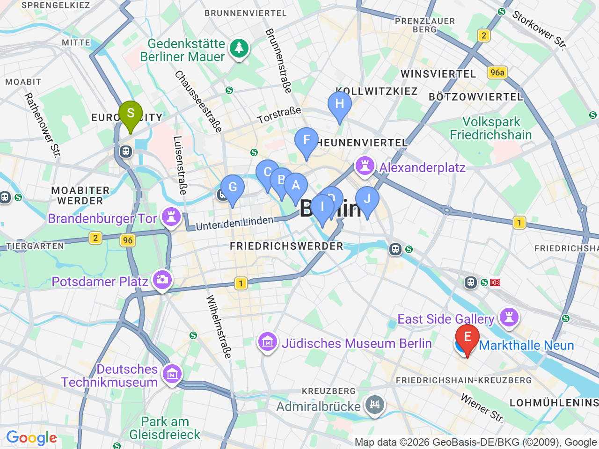

Day 19 · 2026-09-03（四）
德國・柏林/萊比錫/德勒斯登 Day 3/7
博物館島漫步：柏林大教堂・尼古拉街區
漫步博物館島與尼古拉街區，傍晚到 Dussmann 文化書店坐著看書，晚餐銜接每週四限定的 Markthalle Neun 街頭美食夜

固定時間行程DAY 19
| 時間 | 地點 | 地點 (英文) | 交通方式／班次 | 價格 | 預計停留(分鐘) | 備註 |
|---|---|---|---|---|---|---|
| 17:00-22:00 | 晚餐：Markthalle Neun Street Food Thursday | 1Markthalle Neun, Berlin | 步行 | 見上方三餐資訊 | 90 | 只有週四限定開放，9/3剛好是週四 |
彈性探索景點DAY 19
| 地點 | 地點 (英文) | 預計停留(分鐘) | 價格 | 備註 |
|---|---|---|---|---|
| 柏林大教堂外觀＋Lustgarten 草坪 | ABerlin Cathedral, Berlin | 約30分鐘 | 免費 | 博物館島地標建築外觀，教堂正前方草坪＋河岸散步視野很好 |
| Das Panorama（替代展） | BPergamonmuseum. Das Panorama, Am Kupfergraben 2, Berlin | 約60分鐘 | 依現場公告 | 佩加蒙博物館整修關閉中（2027部分重開），替代展Asisi全景畫，在博物館島對面，有興趣可加減逛 |
| 點心：Zeit für Brot | CZeit für Brot, Berlin | 約20分鐘 | 約 €3-6 | 肉桂捲名店 |
| 午餐：Brauhaus Georgbräu | DBrauhaus Georgbräu, Berlin | 約60分鐘 | 見上方三餐資訊 | 尼古拉街區河畔 |
| 尼古拉街區 | FNikolaiviertel, Berlin | 約45分鐘 | 免費 | 柏林最古老街區，重建後的中世紀風貌 |
| Hackesche Höfe | GHackesche Höfe, Berlin | 約30分鐘 | 免費 | 相連的庭院群，特色小店與藝廊 |
| Dussmann das KulturKaufhaus | HDussmann das KulturKaufhaus, Friedrichstraße 90, Berlin | 約60-90分鐘 | 免費入場 | 五層樓文化書店（書籍/黑膠/文具），有咖啡座，週四營業至24:00，適合傍晚去 Markthalle Neun 之前坐著看書休息，也適合改天彈性安排 |
每日三餐
午餐
Brauhaus GeorgbräuBrauhaus Georgbräu約 €12-20／人
📍 Spreeufer 4, Berlin尼古拉街區河畔啤酒館；備案 Zur letzten Instanz（1621年柏林最老餐廳，Eisbein 水煮豬腳，需訂位，Waisenstraße 14-16）
晚餐
Markthalle Neun「Street Food Thursday」Markthalle Neun約 €15-25／人
📍 Eisenbahnstraße 42, Berlin每週四17:00-22:00限定，Kreuzberg，強烈推薦
住宿資訊
ibis Berlin Hauptbahnhof
📍 Invalidenstraße 53, 10557 Berlin